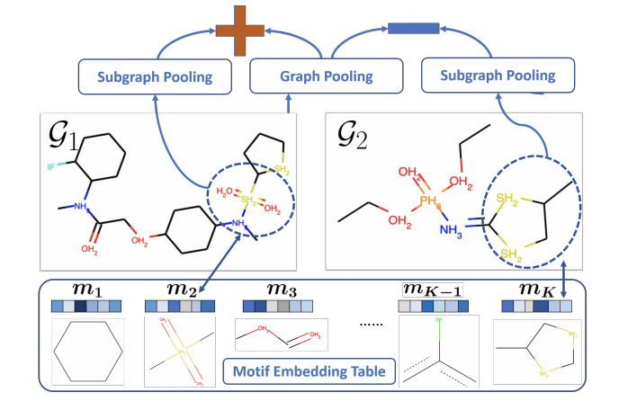
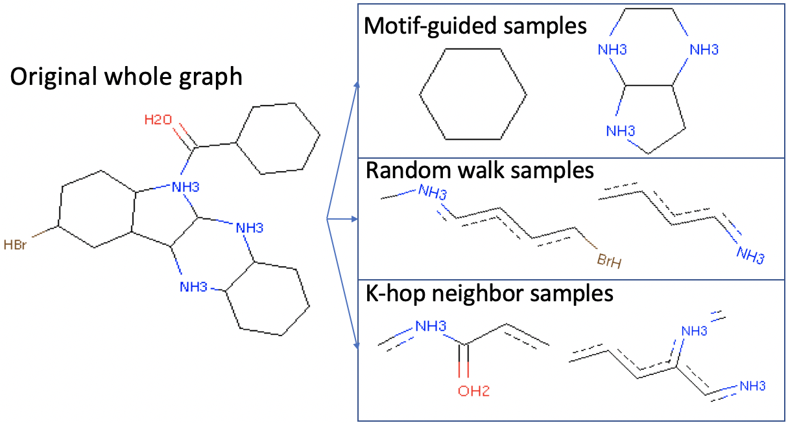
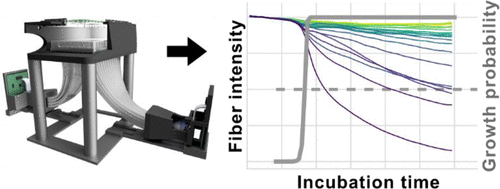
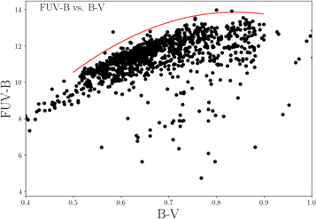
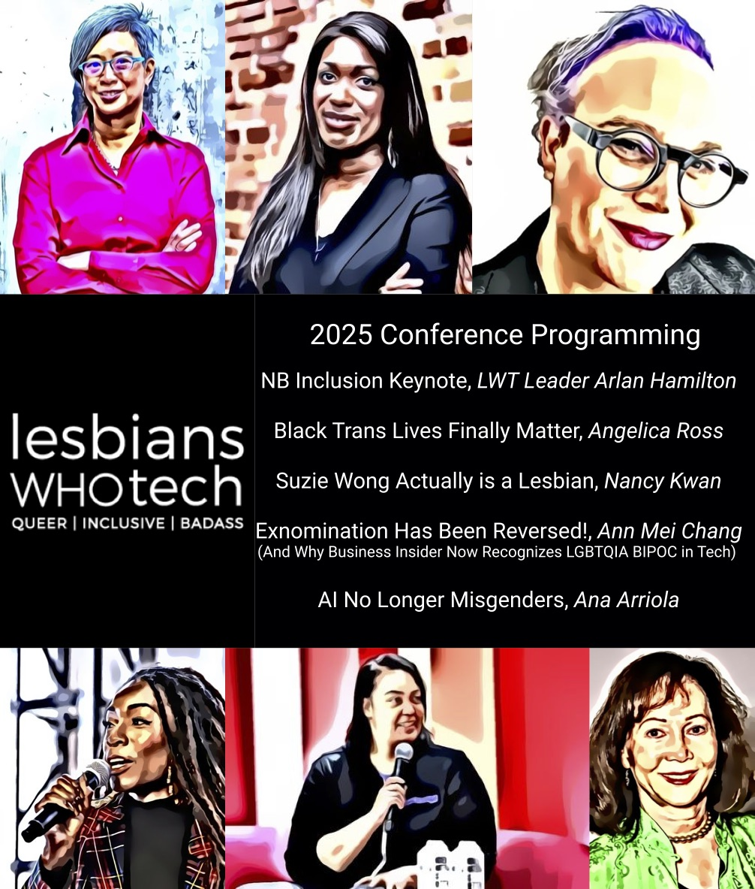

Selected Publications
Motif-Driven Contrastive Learning of Graph Representations

Our framework MotIf-driven Contrastive leaRning Of Graph representations (MICRO-Graph) can: 1) use GNNs to extract motifs from large graph datasets; 2) leverage learned motifs to sample informative subgraphs for contrastive learning of GNN.
MOTIF-Driven Contrastive Learning of Graph Representations

We propose a MOTIF-driven contrastive framework to pretrain a graph neural network in a self-supervised manner so that it can automatically mine motifs from large graph datasets. Our framework achieves state-of-the-art results on various graph-level downstream tasks with few labels, like molecular property prediction.
Automated, Cost-Effective Optical System for Accelerated Antimicrobial Susceptibility Testing (AST) Using Deep Learning

We demonstrate an automated, cost-effective optical system that delivers early AST results, minimizing incubation time and eliminating human errors, while remaining compatible with standard phenotypic assay workflow. The system is composed of cost-effective components and eliminates the need for optomechanical scanning. A neural network processes the captured optical intensity information from an array of fiber optic cables to determine whether bacterial growth has occurred in each well of a 96-well microplate.
Estimating the Ages of FGK Dwarf Stars Through the Use of GALEX FUV Magnitudes

Stellar age cannot be directly measured, yet age determinations are fundamental to understanding the evolution of stars, planets, and galaxies. The work presented here builds upon the idea of a stellar-activity age. We utilized far-ultraviolet (FUV) photometry acquired by the Galaxy Evolution Explorer (GALEX) space telescope as an indicator of chromospheric activity to infer ages of late-F, G, and K type dwarf stars. We derived a purely empirical correlation between FUV magnitudes and stellar age in conjunction with (B − V) color. Our attention is restricted to Sun-like stars with color range 0.55 ≤ (B-V) ≤ 0.71 and absolute magnitude range 4.3 ≤ M V ≤ 5.3. This correlation is functional up to 6 Gyr for FGK dwarfs. With such a correlation, one only needs Johnson (B − V) and FUV measurements to estimate the stellar age for Population i dwarf stars of solar-like temperature and metallicity. Such a calibration has utility in population studies of FGK dwarfs for further understanding of the chemical evolution of the Milky Way.
How to Make Virtual Conferences Queer-Friendly: A Guide
Tutorial for D&I organizers on how to make virtual conferences queer-friendly.
Queer | Inclusive | Badass

Employing future ML capabilities and ML-generated artifacts as a proxy, my poster presents how the tech community, by 2025, will prioritize the creation of fair, intersectional, and ethical technology.
Honors
- MLH Top 50 Class of 2021 ~ out of 135,000 students who participated in hackathons, story was one of 50 recognized due to projects and impact on other students in community
- UCLA Samueli School-Wide Outstanding Bachelor of Science (2021)
- UCLA Chancellor's Service Award (2021)
- UCLA Samueli Engineering Achievement Award in Student Welfare (2021)
- UCLA Eugene V. Cota-Robles Fellowship (2021) ~ one of most prestigious graduate fellowships awarded by UCLA
- UCLA Graduate Research Assistantship (2021)
- Boeing Company Scholarship (2021)
- Brian J. Lewis Endowment (2021)
- Computing Research Association Outstanding Undergraduate Researcher Honorable Mention (2020)
- AAAI Undergraduate Consortium (2020) ~ presenting at AAAI Undergraduate Research Symposium and receiving mentorship from leading researchers in AI; 1 of 14 accepted out of 82 applicants for inspiring personal statement and exemplary service and research in self-supervised methods for learning graph-level representations
- IBM Quantum Challenge (2020) ~ decomposed a large unitary gate for a minimal gate set with Qiskit; 1 of 574 winners out of 1745 participants
- Out for Undergrad Tech Conference (2020) ~ 1 of 300 applicants accepted for superb academics, exemplary leadership, and work experiences, as well as diverse and unique viewpoints
- Google Queer Tech Voices Conference (2020) ~ 1 of 32 accepted out of hundreds of applicants
- 3rd Place Award for Best Hack @ Rose Hack, Major League Hacking (2019) ~ developed application that produces mashups of songs and evaluates which two songs form the best mashup
- Siemens Competition Regional Finalist (2017) ~ 1 of 101 finalists selected from 4092 entrants
- Award of Achievement, Association for Computing Machinery, San Francisco Bay Area Professional Chapter (2016) ~ developed automated digital music transposer
- Dean's Honors List (2018-2021)
Talks and Panels
- Intersectionality Panel, NAACL 2021
- Queer in AI Inclusive Conference Guide DEI Update, Allen Institute for Artificial Intelligence (2021)
- Exploring Text Specific and Blackbox Fairness Algorithms in Multimodal Clinical NLP at UCLA-NLP (2021)
- On Dyadic Fairness: Exploring and Mitigating Bias in Graph Connections, UCLA Scalable Analytics Institute (2021)
- Queer in AI Panel at UCLA (2021)
- Introduction to Probabilistic Graphical Models, UCLA Scalable Analytics Institute (2021)
- Spectral Graph Sparsification (adapted from Spielman Ch. 32, Teng Ch. 6), UCLA Scalable Analytics Institute (2020)
- Fair Machine Learning (adapted from Barocas and Hardt's 2017 NeurIPS talk), Microsoft Garage Brown-Bag (2020)
- "MONET: Debiasing Graph Embeddings via the Metadata-Orthogonal Training Unit", Microsoft Research Cambridge Paper Reading Group (2020)
- An Automated and Cost-Effective System for Early Antimicrobial Susceptibility Testing Using Optical Fibers and Deep Learning, UCLA HHMI Day 2019 (2019)
Press
- .Tech Domains x Major League Hacking: 24 Student Programmers Share Their #MyStartInTech Stories (.Tech Domains, 2021)
- UCLA Engineering Outstanding Bachelor Awardee Champions Equity for LGBTQ+ Community (UCLA Samueli Newsroom, 2021)
- Queer in AI with Arjun Subramonian (500 Queer Scientists, 2021)
- UCLA Samueli Announces 2021 Commencement Awards (UCLA Samueli Newsroom, 2021)
- QWER Hacks: A Case Study on How to Build an Inclusive Hackathon (UCLA Samueli Newsroom, 2021)
- UCLA’s ACM AI Podcast Addresses AI and Diversity, Featuring Guests from Underrepresented Communities (UCLA Samueli Newsroom, 2021)
- Student-run tech podcast aims to make computer science more diverse, accessible (Daily Bruin, 2021)
- ACM AI at UCLA, Outreach + Events Feature (A.I. For Anyone, 2020)
- Students code software to help underrepresented groups in LGTBQ+ hackathon (Daily Bruin, 2020)
- Equality in America Town Hall with Tom Steyer (CNN, 2019)
- Washington, California Students Win Regional Siemens Competition at California Institute of Technology (citybizlist, 2017)
- Indian American STEM Whiz Kids Named 2017 Siemens Regional Finalists (IndiaWest, 2017)
- Three MVHS students make it to semifinal round of Siemens competition (El Estoque, 2017)
- Local Charity Map of Bay Area (ArcGIS, 2016)
Justice, Equity, Diversity, and Inclusion (JEDI) in AI
I am a fervent champion of justice, equity, diversity, and inclusion in AI research and beyond!